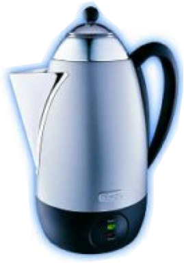

 This repository holds the source code for percolator and format converters software packages; a software for postprocessing of shotgun proteomics data.
Documentation of the software can be found at in wiki format on the GitHub site, together with the source code
The binary downloads are also hosted on githubs release page:
https://github.com/percolator/percolator/releases
The building procedure is cmake-based. Helper scripts for building on different platforms can be found in: admin/bilders/
The cleanest way to build is to use the vagrant virtual machine system, which can be setup using the script: admin/vagrant/manager.sh
We keep an e-mail list percolator-user@googlegroups.com where new releases are announced.